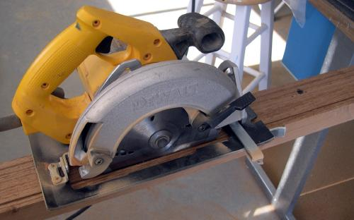
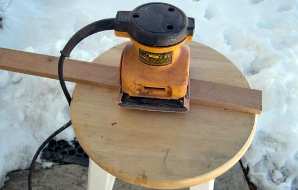

| Wood Slat Floor ( 4 of 7 ) | Menu Last Page Next Page |
|

 |
Cutting Cedar Slats The Sea Ranger floor is made from 2 X 4 fence cedar. The slats are cut using a table saw or circular saw with the fence set at 3/8".
Sanding Slats A palm sander with 80 or 100 grit sandpaper is used to smooth out the surfaces. |